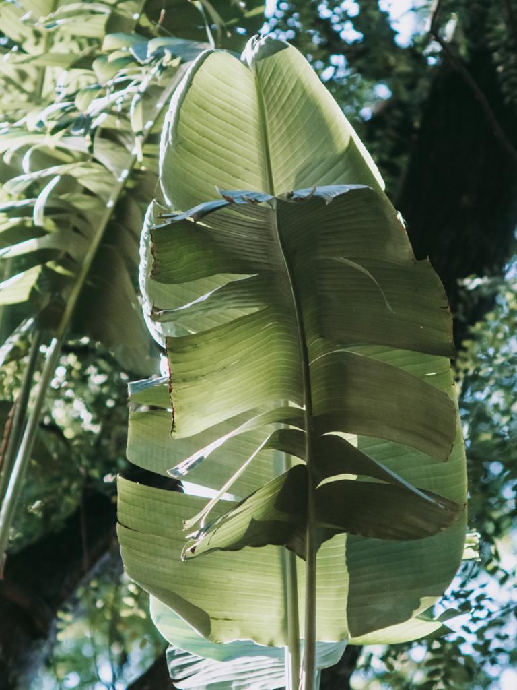

Is an independent civic space free from all political parties unions and associations. We aim to engage and sensitise citizens all over the country of Nigeria, with a simple vision of moving forward through advocacy, information an d awareness. 
Our core priorities are to sensitise, enlighten, educate, on how to participate on every day governance of the country from the grassroots.
Our objective is to create awareness through conversations in our local dialects in different regions of the country.